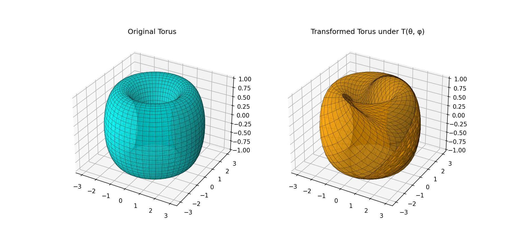

Averaged Jacobian Framework
Overview
I present a method for measuring average global change of a manifold under iterative deformation transformation, which provides a new perspective on the analysis of iterative mappings of manifolds and global curvature. This framework can be applied to a multitude of problems in cosmology, manifold learning, and computational geometry.
Background
A common question in applied differential geometry is, given a manifold \(M\) (base manifold) with metric \(g_{ij}\) and some transformation \(T_{T(\textbf{p})}: M \to N\) mapping \(M\) into (possibly onto) some other manifold \(N\), how does this transformation affect the global geometry of the base manifold? One way is to look at how the curvature changes under this transformation, which is to say we measure how the vectors in the tangent spaces \(T(\textbf{p})\) at each point \(\textbf{p}\) of the base manifold change under the transformation.
Typically, this measuring of global change under the mapping would be done by comparing the metric(s) \(g_{ij}\) in the base manifold to the metric(s) \(g'_{ij}\) in the target manifold \(N\). This is done by pulling back the metric \(g'_{ij}\) onto M and comparing the two there. While, this is elegant, for non-trivial geometries and non-isometric transformations, computing these comparisons or even finding a closed form of the original metric becomes increasingly challenging and requires solving challenging partial differential equation.
Concept
Rather than trying to acquire a closed form of the metric \(g_{ij}\) then comparing \(g_{ij}\) with \(g'_{ij}\) under the mapping \(T\), we can instead establish a smooth global averaged measure of change in a way that is independent of the metric. Recall that under a transformation \(T: M \to N\), the Jacobian of \(T\) is the differential pushforward of T, denoted as $$ dT_p:T_pM\to T_{T(p)}N $$ which we identify as a transformation taking tangent vectors at points in \(M\), to tangent vectors at \(T(p)\) in N. In local coordinates we define the Jacobian as $$ J_i^a = \frac{\partial T^a}{\partial x^i} $$ . Now in a purely abstract setting, we might not be so concerned with these derivates, but more so in how the volume elements transform with it, which tells us something about the transformation \(T\) i.e., namely whether it's an isometry, conformal, or neither. However, if our goal is to get an average sense of how the geometry changes under the mapping, we can establish a system for doing so by acknowledging that in a discretized setting, the Jacobian is computable or can be approximated at each point. If we restrict ourselves to a region \(\omega \subset M\) where \(\omega\) is chosen in a way that is computationally feasible, i.e., by uniform sampling, adaptive, etc, then the total volume change (\(d V'\)) can be given as follows $$ dV' = \int_{\omega}|\text{det J}|dV $$ . This gives us a measure of global change under the transformation, but not yet a local measure for developing a global average. To do this, we note that we are integrating over a region, and hence summing over some smaller region is just a discretization, thus we have
where \(n\leq\omega\). Since \(n\) is the number of points, we can define an average change by simply dividing the sum by \(1/n\), hence we can write
and we this gives us a way of measuring the average change in a purely computational manner given an analytic transformation \(T: M \to N\). Note that for discrete settings as I'll assume are the primary interest, this just becomes a summation with division by \(n\).
Iterative Mappings
So far we've constructed the technique around a single transformation, but we can just as easily extend it to successive iterations of a mapping. Suppose we apply a transformation \(T:M\to N\) in succession \(n-\)times, we'll denote this as \(T^n:M_i\to N_i\) for \(i\leq n\) and where \(T^n =T\circ T^{n-1}\) and \(T^0=\text{id}_M\). It should be noted that we apply each successive map to the same region, points sampled from this region can change, but the region should remain consistent. It'll help to denote our average change \(dV_{\text{avg}}'\) as a function \(\mu(T): T \to \mathbb{R}\) which is a function that maps a transformation to a real number such that it averages up all the jacobians at each point under the transformation. Then, it's clear that \(\mu(T^n): T \to \mathbb{R}\) is just the sum of the averages under each transformation divided by \(n\), thus we define the average change after n-successive applications of the map \(T\) as
Note we'll adopt the expectation value notation to be more concise. If \(T\) is some transformation that moves our manifold forward in time by some evolutionary dynamics or flow, then this tells us the average change in our geometries over time. Extending this to long term behaviors, in the limit we have
which is a similar form to expressions from dynamical systems.
Geometric Horizons and Convergence
One natural question we might ask is what happens to the expectation value in the limiting case of \(n\), this formulation gives us a natural way of answering that both qualitative and quantitatively.
In a dynamical system one often studies the trajectories of the system in phase space, tracking deformations over time. This is done by computing jacobians at each point in the trajectory and averaging them up to get an estimate on its long term behavior which leads directly to the idea of Lyapunov exponents. Our setup then suggests some analogue, and similarity in form, to the study of stability in dynamical systems, but in a more generalized and global way which applied to manifolds. While the methods of dynamical systems are typically concerned with trajectories and qualitative vs. quantitative measure, this method provides a way to achieve both and do so in a local and global setting.
We can study the long term behavior of a geometry by determining whether the evolution of our expectations are bounded for large \(n\). Let's first introduce a notion of measuring the difference in changes, a transformation introduces, as the finite difference of the mappings themselves:
Now assuming \(T^i\) forms a smooth sequence of transformations, we take the limit of the transformations and find the dynamic expression for the expectation flow to be
Assuming we have an analytic expression for the transformations, this gives us a way to directly predict and compute when the geometry's flow will stabilize or if it does at all, i.e., where \(\mathbb{E}(\mu(T(x_i)))=0\).
From this, we have an effective framework for developing probabilistic bounding arguments on long term behavior of any general Riemannian geometry under iterative mappings.
Algebraic Analysis
In cases where the geometric evolution of our manifolds exhibits periodic or recurrent behaviors, we should be able to define an algebraic structure which produces different states of the system over some number of iterations. Suppose every \(i^{th}\) iteration of the mapping \(T\) returns the geometry to its initial state, then we can identify \(\mu(T^{j})\) as algebraic elements such that under an action defined by composition, \(\mu(T^{j})+\mu(T^{k})=\mu(T^{j+k})\).
Computational Notes
The bulk of the computational complexity for the technique comes from computing the derivatives in the jacobian, which can be made fast, but grows linearly \(O(n)\) with the number of \(n -\)points sampled from the region of the manifold \(M\) you are studying. For setups where you are applying iterative maps, this dependence grows as \(O(nm)\) where \(m\) is the number of iterations. Note that the number of points \(n\) should be the same for each mapping, i.e., its fixed for all iterations \(m\). Assuming the manifold is discretized into an \(n \,\text{x} \,n\) grid, the overall complexity would typically be \(O(mn^2)\), but because of the average doesn't require all points in the grid, we can reduce the polynomial complexity to something linear.
The method could be extended to incorporate more geometric information from the spectral decompositions of the jacobians, but this would require diagonalization at each step in the averaging process, which can be costly depending on your environment. However, independent nature of the technique lends itself to parallelization naturally. In theory, you could batch sample points in your region across different threads and compute the jacobians and their respective decompositions in parallel, then join them back for averaging on the main thread.
One Short(ish) Example
Let's ground the concept in something concrete to get an idea of how it might work. Note, that the true utility isn't in calculating "idealized" geometries, and certainly not by hand, but instead for highly non-trivial ones in a computational/discrete settings. Setting up an example that is illustrative, non-trivial and short is difficult, that said, it'll help to see how it works in practice. Let \(M\) be the 2-Torus \(T^2\) with a parametrization \((\theta,\phi)\) and metric \(ds^2=d\theta^2+d\phi^2\). We can choose a non-trivial transformation \(T\) as
where \(\epsilon\) and \(\delta\) are coupled shearing constants, and where \(\theta_0=\theta\) and \(\phi_0=\phi\) and \(T^n\) expression for the \(n^{th}\) transformation. For a quick visualization I've provided a figure with exaggerated sheering constants \(\epsilon =1.4\) and \(\delta=1.6\)

The computed jacobian determinate is \(\text{det}(J)=1-\epsilon \delta cos(\phi_n) cos(\theta_n)\) which fluctuates over successive iterations and over points in the region. In a real setting, we'd sample points on the torus by defining a uniform sampling strategy over the parameter space \((θ,ϕ)∈[0,2π]×[0,2π]\). We discretize this space by selecting points according to
however for sake of the example we'll choose the following points
then evaluating the determinate of the jacobian at each of these pairs of points we get the expectation
assuming small values for the shearing constants we have the approximation
Now taking the derivatives we have
which after computing, yields the stability conditions for our geometric evolution:
For sufficiently small \(\delta\) and \(\epsilon\) this is satisfied. Thus, for \(n\) iterative transformations, the geometric change is bounded since the expected change in averages vanishes.